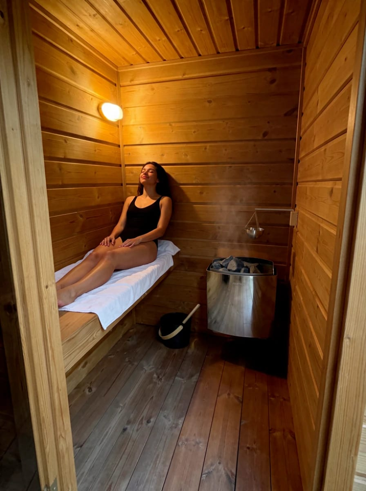

Why heat before bed helps you fall asleep
Counter-intuitively, the way to get cooler at bedtime is to get hot first. This is one of the better-evidenced things a sauna does — with one honest caveat.
Falling asleep is triggered by a fall in core body temperature, not by being warm. Your core drops by about a degree over the evening, and the steepness of that fall is one of the signals the brain reads as the beginning of sleep.
Heating the body deliberately, an hour or two before bed, makes that fall steeper. Blood vessels in the hands and feet open to shed the heat, and the core comes down faster than it otherwise would.

What the evidence says
The best single source is a systematic review and meta-analysis by Haghayegh and colleagues in Sleep Medicine Reviews (2019), pooling thirteen human trials of passive body heating before bed.
Its findings, which are unusually specific for sleep research:
| What | The finding |
|---|---|
| Water temperature | 40–42.5 °C |
| How long | as little as 10 minutes |
| When | 1–2 hours before bed |
| Effect | Shorter time to fall asleep. Better self-rated sleep quality and efficiency |
A later study in the Journal of Clinical Sleep Medicine (2021) followed around 1,100 older adults and found the same association. Hot-water bathing before bed went with falling asleep faster, alongside a larger temperature gradient between the hands and feet and the trunk, which is exactly the fingerprint of heat being shed. That one is observational, so it shows the pattern rather than proving the cause.
The caveat we are not going to bury
Almost all of this research used baths and showers, not saunas. The mechanism is the same, warm the shell, let the core fall, and a sauna raises body temperature at least as effectively as a bath. But that last step is an inference we are making, not a result somebody published.
If a sauna company tells you there is a large body of trials showing saunas improve sleep, they are describing the bathing literature and hoping you will not look.
Deep sleep: less certain
Several studies report more slow-wave sleep after evening heating, particularly in the first cycle of the night. Others do not. A review of trials in older adults found increases, but rested on three crossover studies. Enough to be interesting, not enough to promise anything.
Timing seems to decide where in the night the effect lands: heating earlier in the evening pushed the extra deep sleep into later cycles, heating closer to bed into the first. This is a small literature and the honest summary is "probably something, direction depends on timing".
What this means in practice
- Finish 60–90 minutes before bed. The session is not the point. The cooling afterwards is. Straight from the sauna into bed skips the part that works.
- Cool down properly. A shower, then an air-conditioned room. In Dubai that matters more than in Helsinki. Stepping out into a 35 °C night does not let the heat go anywhere. See does an outdoor sauna work in the Dubai summer.
- Regularly beats occasionally. The trials used repeated sessions, not one heroic one.
- Do not go to bed dehydrated. It will wake you at three in the morning and you will blame the sauna.
This is also the single practical reason a sauna at home gets used and a sauna at a gym does not. A 9 p.m. session an hour before bed is trivial twenty steps from your bedroom and absurd if it involves driving somewhere. The protocol that works is the one the building allows.
If sleep is genuinely the problem
Insomnia is a medical condition with treatments that work, and cognitive behavioural therapy for insomnia outperforms everything in this article. A sauna is a pleasant nudge to a normal sleeper's evening, not a treatment. If you are not sleeping, see a doctor rather than buying a cabin.
The wider evidence on heat and the body. Forty years of Finnish data, and what randomised trials have actually confirmed. Is in what the research says about saunas and health.
An hour before bed, twenty steps away
The timing is the hard part at a gym and trivial at home. That is most of the argument for having one.